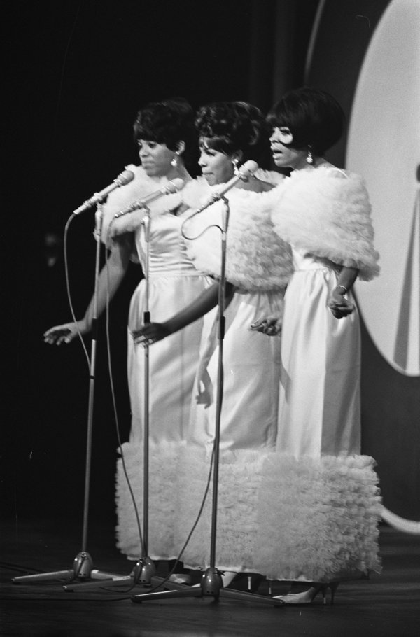

Stop! In the Name of Love is the 1965 Supremes single written by Holland-Dozier-Holland.
Motown released it on February 8, 1965.
It reached No. 1 on the Billboard Hot 100 and No. 7 in the UK.

Table of Contents
- The Story Behind the Song
- Recording at Hitsville
- The Stop Gesture
- How It Charted
- Legacy and Covers
- FAQ
The Story Behind the Song
An Argument Turned Into a Hook
Lamont Dozier said the idea came from a fight with a girlfriend who had been cheated on.
Her plea to stop became the hook.
Dozier took it to Brian Holland, who was working on a slow melody.
Dozier asked him to speed it up and fit the words to it, according to American Songwriter.
A Role Reversal
On the record, the narrator is the one who has been wronged.
Diana Ross confronts a cheating partner and begs him to think before he walks out.
Eddie Holland, Dozier and Brian Holland wrote it as a trio, the team behind the group's run of hits.
Recording at Hitsville
The Sessions
The Supremes cut the track at Hitsville U.S.A. in Detroit on January 5, 7 and 11, 1965.
Brian Holland and Lamont Dozier produced it.
The finished single runs 2:52, with "I'm in Love Again" on the B-side.
It also appears on the album More Hits by the Supremes.
The Players
- James Jamerson on bass and Benny Benjamin on drums.
- Joe Messina on guitar, Johnny Griffith on organ and James Gittens on piano.
- Jack Ashford on vibraphone and Mike Terry on baritone saxophone.
- Florence Ballard, Mary Wilson and the Andantes on backing vocals.
The Stop Gesture
One hand goes on the hip while the other thrusts out like a traffic cop.
American Songwriter reports that Paul Williams of The Temptations suggested it in rehearsal before a TV special hosted by Dusty Springfield.
The Supremes performed the song on ABC's Shindig! in a show that aired on February 24, 1965.
They later performed it on the UK special The Sound of Motown, which aired on April 28, 1965.
How It Charted
It was the fourth straight Supremes single to top the Hot 100, after "Where Did Our Love Go" opened the run in 1964.
It held No. 1 from March 27 to April 3, 1965, and finished 1965 at No. 20 on the Hot 100 year-end list.
| Measure | Detail | Result |
|---|---|---|
| Billboard Hot 100 | US pop peak, 1965 | No. 1 |
| Hot R&B | US R&B peak, 1965 | No. 2 |
| UK Singles Chart | UK peak, 1965 | No. 7 |
| Grammy Awards | Best Contemporary Rock & Roll Group Vocal Performance, 1966 | Nominated |
| Grammy Hall of Fame | Inducted | 2001 |
| Rolling Stone | 500 Greatest Songs of All Time, 2021 | No. 254 |
Legacy and Covers
Covers
The Isley Brothers recorded it in 1966 for their album This Old Heart of Mine.
The Hollies cut a version in 1983 that reached No. 29 in the US.
Where It Fits
The record sold a million copies in the US and went Gold.
It belongs to the Motown sound that filled the radio in 1965.
You can find it on our list of the best 60s songs.
The full story of the trio is in our Supremes biography, and the label's wider sound is covered in the Motown, Soul & R&B hub.
FAQ
Who wrote the song?
Holland-Dozier-Holland wrote it: Brian Holland, Lamont Dozier and Eddie Holland.
Brian Holland and Lamont Dozier produced it.
What inspired the song?
Lamont Dozier said the idea came from an argument with a girlfriend who had been cheated on.
He turned the plea into a hook and brought it to Brian Holland.
When was it released and where did it chart?
Motown released it on February 8, 1965.
It held No. 1 on the Billboard Hot 100 from March 27 to April 3, 1965, and reached No. 7 in the UK.
Who invented the stop hand gesture?
American Songwriter reports that Paul Williams of The Temptations suggested it in rehearsal before a TV special.
The Supremes then made it their signature move.
Who has covered the song?
The Isley Brothers recorded it in 1966.
The Hollies took it to No. 29 in the US in 1983.
Few Motown singles pair a pleading lyric with such a crisp, confident groove.
Wikipedia's entry on the song covers its history and charts in more depth.
Press play above and hear why Stop! In the Name of Love still makes people raise a hand.